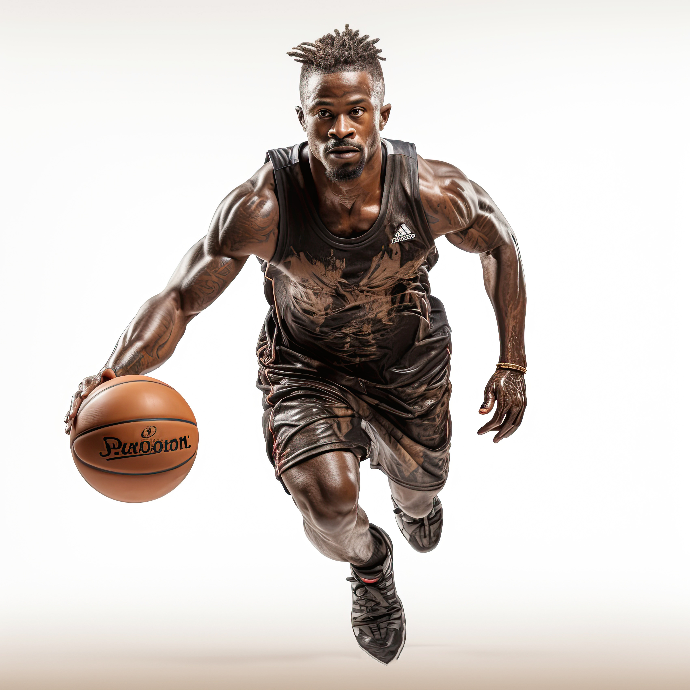

Welcome to ClutchStats Dashboard
Featured Player
Russell Westbrook
Known for his relentless energy, triple-double dominance, and fearless playmaking, Russell Westbrook has redefined the point guard role. His MVP season and historic averages make him a standout in any era of the game.
